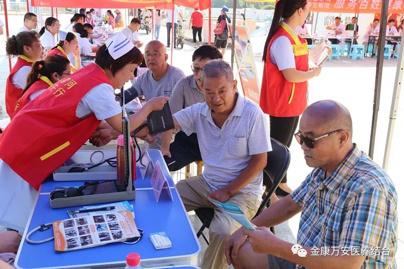
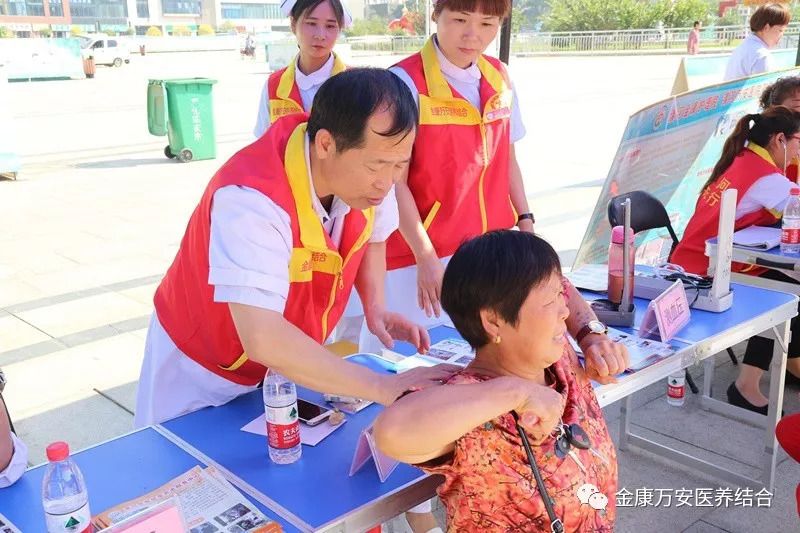
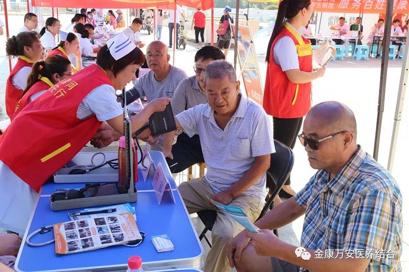
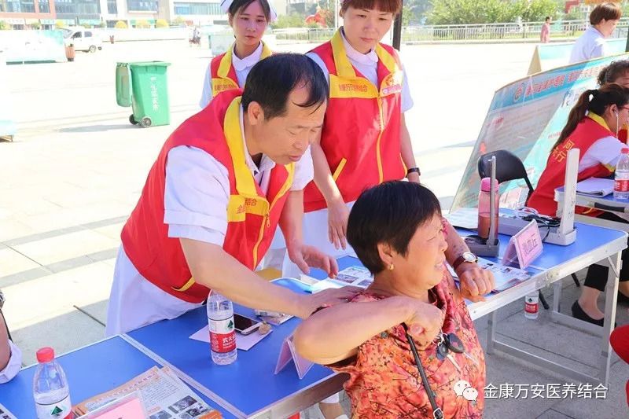
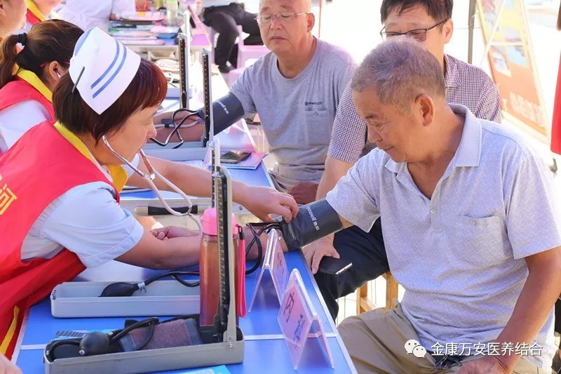
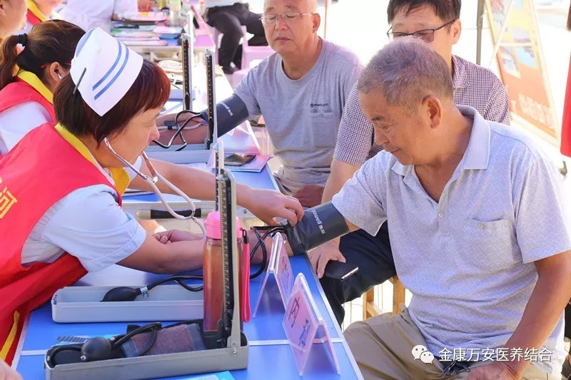
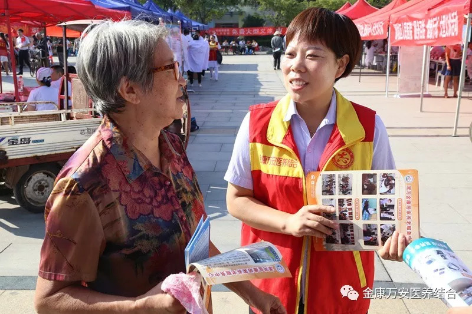
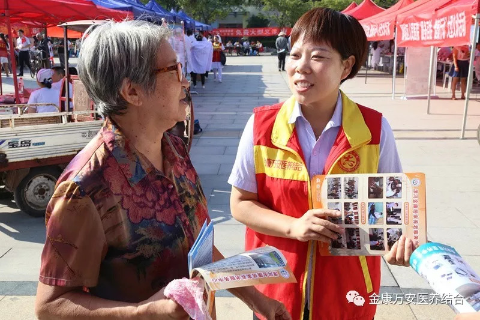

万安康复医院新闻
漯河万安康复医院、漯河金康护理院参加2018年漯河市“服务百姓健康行动”大型义诊活动
人气: "" 时间：2018-09-08
2018年9月8日上午，由漯河市卫计委组织的2018年漯河市“服务百姓健康行动”大型义诊活动在双汇广场隆重举行，业务院长王立信带领的漯河万安康复医院、漯河金康护理院两院十多余名医护人员参与此次大型义诊活动。
 



义诊活动中前来咨询、问诊的群众络绎不绝，我院专家们就慢性病、多发病、常见病等免费为群众提供诊断和咨询服务，免费测血糖、量血压、心肺听诊等常规检查，提出诊治方案，对用药、保健、饮食等方面给予指导。


 

此次大型义诊活动的开展是为了，一、方便市民在家门口就能享受到专家的免费诊疗服务，通过专家讲解普及了健康知识，树立广大群众正确的就医理念，努力为人民群众健康服务；二、推动卫生计生和中医药系统深入学习贯彻落实党的十九大精神和全国卫生与健康大会精神，促进实施健康中国战略。
 

此次义诊活动取得了圆满成功，得到了群众的一致好评。近年来，金康万安已经举行了百场义诊活动，场地遍布乡村、社区，惠及百姓上万人，从寒冬到夏日，季节在变，地点在变，不变的是金康万安对百姓健康的那份责任，义诊活动还将持续下去，金康万安将为更多的百姓做更好的服务！